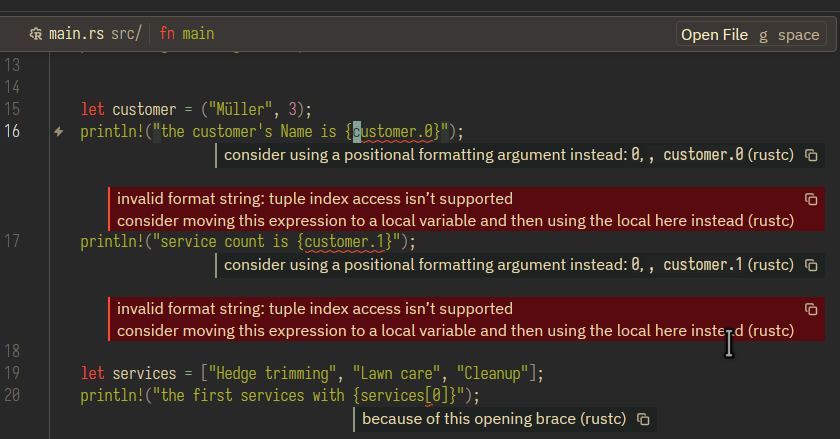
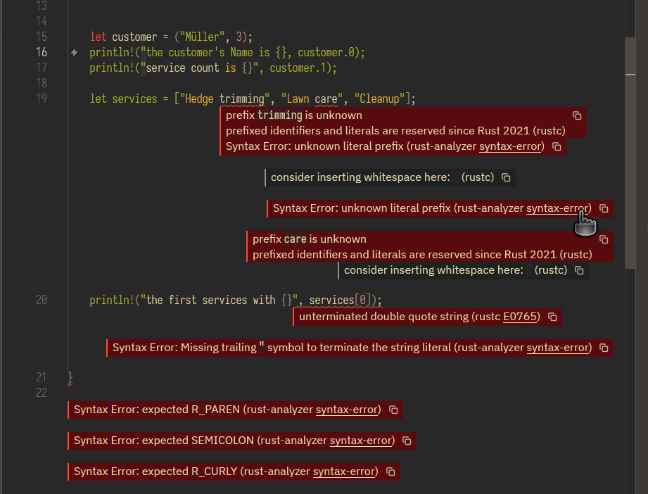

Rust Crash Course · Day 4 · Practice record
Give every value a shape.
Use Rust’s scalar types for single facts, then combine related facts with tuples and arrays. Today’s program turns a small offer request into typed data Rust can check for you.
What you completed
You created practice/day-04-data-types, opened it in Zed, wrote a typed Rust program, and repeatedly used cargo fmt && cargo run. The final program compiled cleanly and printed an offer-style set of facts: jobs, price, approval state, grade, customer information, and services.
Vocabulary first: what is a primitive data type?
A primitive data type is a fundamental value type built into the Rust language. You can use one immediately—Rust already knows how to store it, check it, and operate on it. You do not have to define a struct, enum, or custom type before using it.
struct Offer or enum Status is your own custom type, built from these primitives and other types.true where a price is expected.Scalar types: one value at a time
Rust has several basic, or scalar, types. You used four of the most useful ones.
u32A non-negative whole number, such as 4 jobs.f64A decimal value, such as 49.95.boolA state with only two possible values: true or false.charA single Unicode character, written with single quotes: 'A'.let jobs: u32 = 4;
let price: f64 = 49.95;
let approved: bool = true;
let grade: char = 'A';The annotation after the colon is optional when Rust can infer the type. Keeping it here is valuable practice: it makes the intent visible and helps you learn the vocabulary.
Integers: signed, unsigned, and the default
An integer is a whole number. Its type tells Rust two things: whether it may be negative, and how much memory Rust reserves for it. The letter is the sign rule; the number is the number of bits.
i8, i16, i32, i64, i128Use i when a value can be negative. An i8 holds -128 through 127.u8, u16, u32, u64, u128Use u when a value can never be negative. A u8 holds 0 through 255.isizeIts size matches the computer’s address size: normally 64 bits on a modern 64-bit computer.usizeAlso matches address size. Rust commonly uses it for collection positions and lengths, including array indexes.// Signed: a temperature may be below zero.
let temperature: i8 = -12;
// Unsigned: a count cannot be below zero.
let jobs: u32 = 4;
// Rust infers i32 for an unconstrained whole-number literal.
let default_integer = 42; // i32When you write an ordinary whole-number literal like 42 and the surrounding code gives Rust no stronger clue, Rust defaults to i32. That is a signed 32-bit integer, ranging from -2,147,483,648 to 2,147,483,647. Rust uses i32 because it is usually a practical balance of range and performance.
u32 is clear. For an array position, use usize. Do not reach for a smaller type merely to save space unless that tradeoff matters.Compound types: related values together
When one fact is not enough, Rust gives you structures that group values without needing a custom type yet.
("Müller", 3) groups a text value and a number.["Hedge trimming", "Lawn care", "Cleanup"] holds three text values..0 for a tuple field and [0] for an array item.let customer = ("Müller", 3);
println!("The customer's name is {}", customer.0);
println!("Service count is {}", customer.1);
let services = ["Hedge trimming", "Lawn care", "Cleanup"];
println!("The first service is {}", services[0]);services[0] is the first service, services[1] is the second, and services[2] is the third.Formatting: variables are not expressions
Rust can capture a simple variable name inside a format string. That is why this works:
println!("Approved: {approved}");Tuple access and array indexing are expressions, not simple variable names. They cannot go inside captured braces. Use a positional placeholder, {}, and provide the expression after the format string instead.
// Works
println!("Customer: {}", customer.0);
println!("First service: {}", services[0]);
// Does not work
// println!("Customer: {customer.0}");
// println!("First service: {services[0]}");
{customer.0} and {customer.1}. Capture syntax accepts a name; customer.0 is an expression. The durable fix is "{}", customer.0.How one missing quote creates many errors
After the formatting fix, the service array looked guilty because the compiler reported unknown prefixes such as trimming and care. The real problem began earlier: the customer println! had an opening quote but no closing quote before , customer.0.
// Broken: the string starts after !(
println!("the customer's Name is {}, customer.0);
// Fixed: the format string ends before the comma
println!("The customer's name is {}", customer.0);When a string remains open, Rust reads later quotation marks in the wrong context. That produces a cascade: the array line and the later println! look broken even though their text can be correct.

trimming, care, and the final print line. Trace upward to the first unmatched quote instead of trying to repair every later diagnostic.Zed lab · your completed program
Rebuild Day 4 from a blank file
- Open Zed’s integrated terminal with Ctrl + `.
- From the course root, create and enter a new Cargo project.
- Open the project in Zed and replace
src/main.rs.
cd "/home/siseng/Documents/08_Personal/programing_languages/Rust/notebooklm-rust-crash-course/practice"
cargo new day-04-data-types
cd day-04-data-types
zed .fn main() {
let jobs: u32 = 4;
println!("Jobs = {jobs}");
let price: f64 = 49.95;
println!("Price is {price}");
let approved: bool = true;
println!("approved is {approved}");
let grade: char = 'A';
println!("grade = {grade}");
let customer = ("Müller", 3);
println!("the customer's Name is {}", customer.0);
println!("service count is {}", customer.1);
let services = ["Hedge trimming", "Lawn care", "Cleanup"];
println!("The first service is {}", services[0]);
}Save the file, then format and run it:
cargo fmt && cargo runSuccessful output:
Jobs = 4
Price is 49.95
approved is true
grade = A
the customer's Name is Müller
service count is 3
The first service is Hedge trimmingRetrieval check
Which line correctly prints the first item in services?
Finish line
Before Day 5
Next: Day 5 introduces functions—giving a block of Rust a name, input, and result.